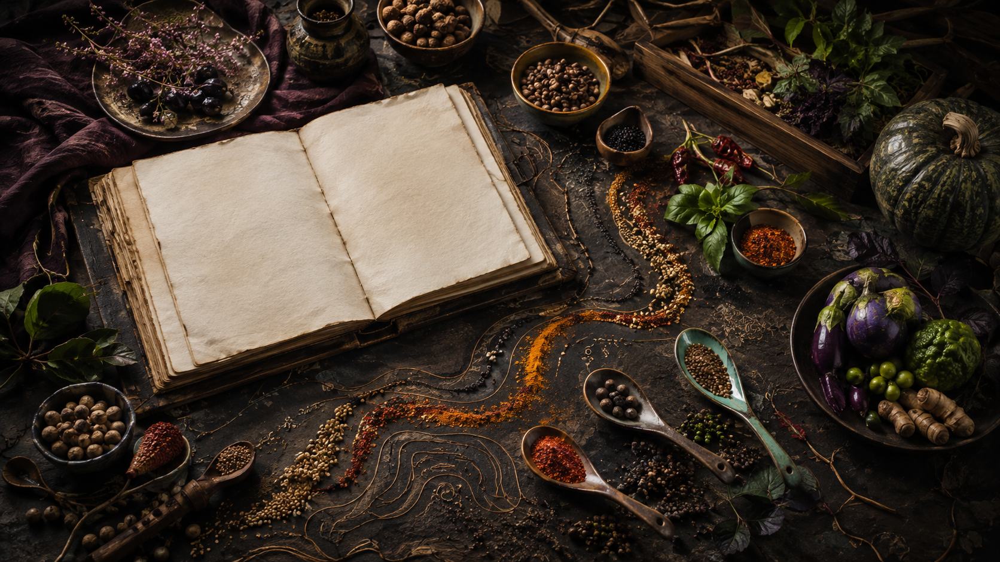

OUR COMPASS / EST. FOR CURIOUS COOKSWe follow flavour
We follow flavour
past the obvious.
Taste Venture Line is an independent editorial studio for cooks who want to understand why food works—not merely repeat a recipe.
A METHOD FOR MOVING FORWARD

Observe. Orient.
Cook. Remember.
Our field method borrows the clarity of a good map. First observe the ingredient in front of you. Then orient around season, appetite and time. Cook with one clear intention, and remember the result so tomorrow’s dinner starts further ahead.
“Curiosity turns an ordinary pantry into a landscape.”
Four bearings
- 01 / Ingredient dignity
Keep flavour recognisable and waste low.
- 02 / Technique literacy
Explain heat, timing and texture in plain language.
- 03 / Cultural respect
Study sources, name inspiration and avoid flattening traditions.
- 04 / Useful beauty
Make food inviting without making it precious.